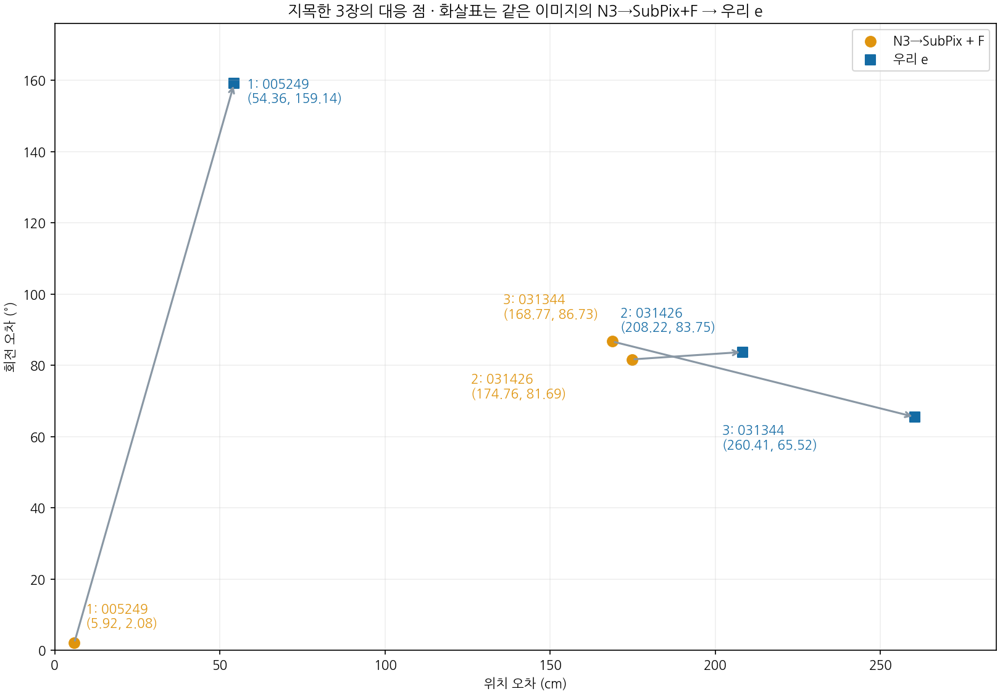

산점도에서 지목한 파란 고오차 3장
파랑은 우리 전체 방법 e, 노랑은 N3→SubPix+F입니다. 아래 화살표는 같은 이미지의 노란 점에서 파란 점으로 향합니다. 두 야간 사례는 N3→SubPix+F도 이미 큰 오차가 있으며 e에서 위치 오차가 더 커졌습니다. 상자는 모두 저장된 최종 예측이며 GT가 아닙니다.
두 방법의 전체 실제 과정 보기: 입력 → 보정 → 상태 → 마스크·선 → 자세 선택 → 최종 자세
| 이미지 | 우리 e 위치/회전 | N3→SubPix+F 위치/회전 |
|---|
| 1. wood_day_01:005249 | 54.36cm / 159.14° | 5.92cm / 2.08° |
| 2. wood_night_01:031426 | 208.22cm / 83.75° | 174.76cm / 81.69° |
| 3. wood_night_01:031344 | 260.41cm / 65.52° | 168.77cm / 86.73° |

그림은 원래 RGB와 저장된 최종 투영 좌표를 사용했습니다. 같은 확대 범위를 적용했고, 005249의 상단 예측이 잘리지 않도록 기존 ROI를 확장했습니다. 기존 고정 평가참조와 C2 지표를 유지했으며 새 추론·PnP·학습·정답 수정은 없습니다. 원래192장 결과와 기존 갤러리는 보존했습니다.